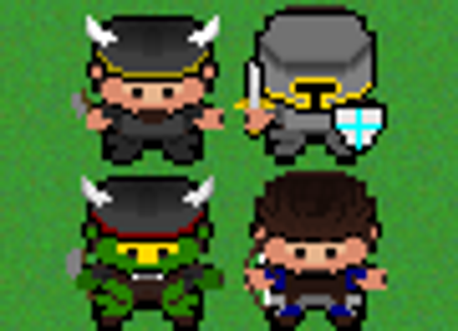

Adventure Tales
A hobby project I worked on in the summer 2016. I wanted to make a top-down 2D fantasy game, mostly to learn how to set-up a good character system for a game. It uses SDL2 for controls, audio and graphics. It mainly features a character system with character stats, with an accompanying inventory system and a dialogue system for talking to NPC:s.


The maps were made and exported in Tiled Map Editor, and then parsed by the game at runtime. This allowed easy set-up and transitions between levels.
By storing resources such as textures in a hashmap, performance was increased considerably, compared to retrieving each resource every time it was needed.
Related Terms:
SDL2 - C++ - Resource Management